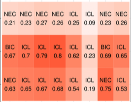

Toward Perception-based Evaluation of Clustering Techniques for Visual Analytics

Venue. VIS (2019) Short Paper
Authors. Michael Aupetit, Michael Sedlmair, Mostafa Abbas, Abdelkader Baggag, Halima Bensmail
Abstract. Automatic clustering techniques play a central role in Visual Analytics by helping analysts to discover interesting patterns in high-dimensional data. Evaluating these clustering techniques, however, is difficult due to the lack of universal ground truth. Instead, clustering approaches are usually evaluated based on a subjective visual judgment of low-dimensional scatterplots of different datasets. As clustering is an inherent human-in-the-loop task, we propose a more systematic way of evaluating clustering algorithms based on quantification of human perception of clusters in 2D scatterplots. The core question we are asking is in how far existing clustering techniques align with clusters perceived by humans. To do so, we build on a dataset from a previous study [1], in which 34 human subjects la-beled 1000 synthetic scatterplots in terms of whether they could see one or more than one cluster. Here, we use this dataset to benchmark state-of-the-art clustering techniques in terms of how far they agree with these human judgments. More specifically, we assess 1437 variants of K-means, Gaussian Mixture Models, CLIQUE, DBSCAN, and Agglomerative Clustering techniques on these benchmarks data. We get unexpected results. For instance, CLIQUE and DBSCAN are at best in slight agreement on this basic cluster counting task, while model-agnostic Agglomerative clustering can be up to a substantial agreement with human subjects depending on the variants. We discuss how to extend this perception-based clustering benchmark approach, and how it could lead to the design of perception-based clustering techniques that would better support more trustworthy and explainable models of cluster patterns.